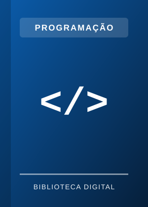
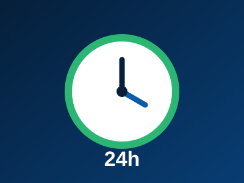
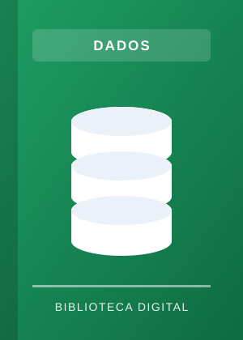
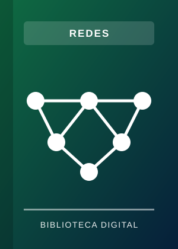
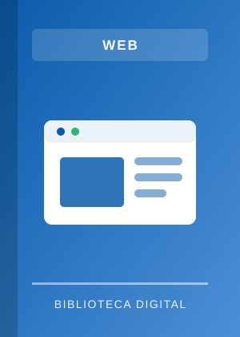
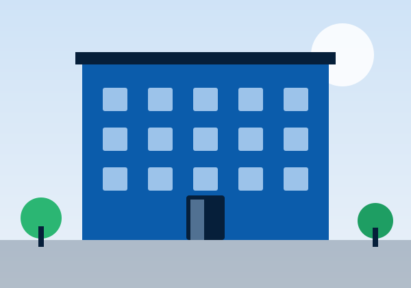
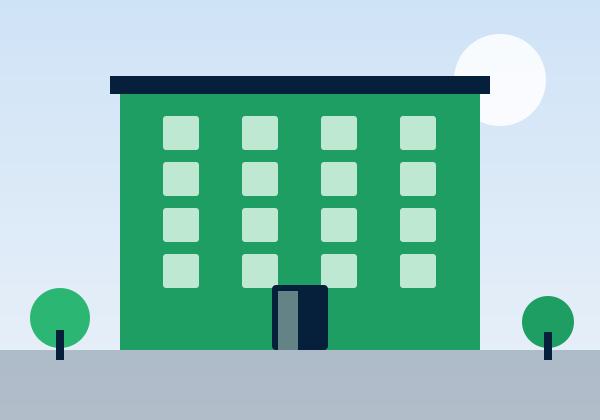
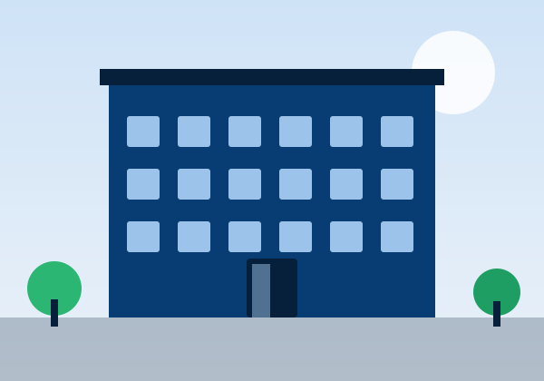
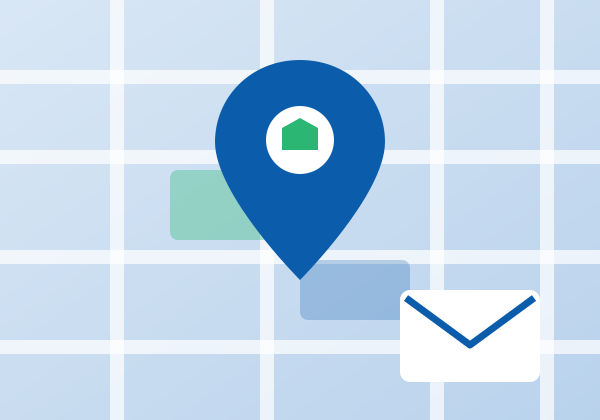

Algoritmos e Lógica de Programação

Introdução ao raciocínio lógico, fluxogramas e estruturas de controle, com exercícios para praticar desde o início.
Saiba mais
- Área
- Programação
- Formato
- E-book
- Nível
- Iniciante
Biblioteca Digital UniFECAF
Dá uma olhada nos livros e conteúdos de apoio. Escolhe um tema e começa por onde fizer sentido pra você.
Ver livrosSabe quando você precisa de um material e não lembra nem por onde começar? A ideia aqui é deixar livros e conteúdos de apoio reunidos num lugar fácil de consultar, seja pelo computador ou pelo celular.
Você pode passear pelo acervo, conhecer alguns títulos e encontrar um caminho para continuar seus estudos. Sem mistério: é só escolher um assunto e explorar.

Os títulos e descrições são exemplos criados para este projeto.

Introdução ao raciocínio lógico, fluxogramas e estruturas de controle, com exercícios para praticar desde o início.

Modelagem, normalização e consultas SQL explicadas passo a passo, com exemplos do dia a dia.
Ciclo de vida, requisitos, metodologias ágeis e boas práticas para desenvolver sistemas de qualidade.

Fundamentos de protocolos, endereçamento e segurança para entender como a internet funciona.

HTML, CSS e responsividade aplicados em projetos reais, com foco em acessibilidade.
Conceitos de aprendizado de máquina, classificação e ética em IA, com exemplos acessíveis.
Os espaços e horários abaixo são exemplos deste protótipo.

Espaço de estudo com salas individuais e em grupo, computadores para pesquisa e atendimento presencial da equipe da biblioteca.
Segunda a sexta, das 8h às 22h · Sábado, das 8h às 14h

Ambiente tranquilo, com mesas para estudo coletivo, acervo físico de apoio e acesso rápido à rede Wi-Fi para consultar a biblioteca digital.
Segunda a sexta, das 8h às 21h

Unidade com laboratório de informática, orientação para trabalhos acadêmicos e apoio no uso das bases de pesquisa e dos livros digitais.
Segunda a sexta, das 9h às 20h
Ficou na dúvida sobre algum material ou quer sugerir um livro? Neste exemplo, você pode falar com a equipe pelos canais abaixo.
